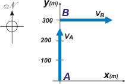
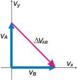

NO ME SALEN
PROBLEMAS RESUELTOS DE FÍSICA DEL CBC |
|

|
Adicional No me salen 14*.- Un automóvil se mueve con velocidad de 20 m/s hacia el Norte; un minuto después y a 300 metros de esta posición, se encuentra moviéndose hacia el Este a 20 m/s. Entonces, el módulo de la aceleración media en dicho intervalo es:
a) 0 b) 0,33 m/s² c) 0,66 m/s²
d) 0,47 m/s² e) 0,08 m/s² f) 1 m/s²
Este ejercicio es muy sencillo, y lo elegí porque tiene interesantes cuestiones para analizar. Veamos un esquema en el que aparezcan las velocidades mencionadas en el enunciado. Acá le asocié un sistema de referencia con dos ejes cartesianos. |
|  |
En el instante inicial se halla en la posición A. Y su velocidad es vA
rA = 0 m î + 0 m ĵ
vA = 0 m/s î + 20 m/s ĵ
(ver nota al pie). Un minuto después lo encontrás en la posición B con una velocidad vB
rB = 0 m î + 300 m ĵ
vB = 20 m/s î + 0 m/s ĵ |
|
|
|
Entre A y B transcurrió un intervalo...
ΔtAB = 1 min = 60 s
Para resolver el problema ya tenemos todo (y hasta sobran datos) porque
amAB = ΔvAB / ΔtAB = vB — vA / ΔtAB
Veamos de qué hablamos cuando hablamos de ΔvAB. |
|
|  |
Ahí lo tenés: es el vector rosa, aquel con origen en el extremo del primer vector y extremo en el extremo del segundo. Su expresión cartesiana es:
ΔvAB = 20 m/s î — 20 m/s ĵ
Para hallar el módulo, es muy sencillo porque teniendo la expresión cartesiana se aplica el Teorema de Pitágoras
|ΔvAB| = [ (20 m/s)² + (20 m/s)² ]½
|ΔvAB| = 28,28 m/s
|
|
|
| luego, el módulo de la aceleración media será |amAB| = |ΔvAB| / ΔtAB |
|
| |
|amAB| = 0,47 m/s² |
respuesta d)
|
|
|
También podríamos haber operado de la siguiente manera: obteníamos la expresión cartesiana del vector aceleración media y luego -del mismo modo que antes- calculamos su módulo. ¿Lo hacemos?
amAB = ( 20 m/s /60 s) î — ( 20 m/s /60 s) ĵ
amAB = ( 0,33 m/s²) î — ( 0,33 m/s²) ĵ
Fijate, entonces, llegamos al mismo resultado. O sea que ya te hice y te recontrahice el problema. Pero ya que llegaste hasta aquí seguí leyendo un cacho más que se viene la mejor parte: te voy a hablar de la tenebrosa y maligna trampa que los docentes te tendimos... guaaagh!!!
Para empezar, releé el enunciado y coincidí conmigo en que la posición B no necesariamente es la que yo representé en el primer esquema. El enunciado dice que "a 300 metros de esta posición"... eso puede ser 300 metros hacia el Norte o hacia cualquier otra dirección. La trayectoria del móvil -aunque el enunciado induce a pensarla rectilínea- puede ser cualquiera mientras cumpla que las velocidades sean tangentes a ella. Acá te pongo dos posibilidades. |
|
|
|
En rojo te dibujé dos trayectorias, de las infinitas posibles. Voy a trabajar un poquito con la de la derecha que me resulta más útil, porque te puedo mostrar claramente el vector desplazamiento, ΔrAB. Ahí lo tenés en verde. Apunte para donde apunte, el desplazamiento tiene un módulo de 300 metros (es un dato del enunciado)... pero acá ves claramente que ni numérica, ni vectorialmente tiene NADA que ver con el vector variación de velocidad, ΔvAB. El dato de los 300 metros sobra olímpicamente.
Pero no está mal haberlo suministrado. Yo también lo haría. Saber física implica saber elegir qué elementos del universo tomar en cuenta, y cuáles no. Si el recorte lo hiciese el docente, y no vos, la pregunta sería tonta, del estilo de de qué color era el caballo blanco de San Martín (tal vez no tanto). Para que el efecto realista tenga sentido, entre las opciones deben figurar aquellas que toman erróneamente los elementos incorrectos. |
|
| * Este ejercicio fue parte del primer examen parcial tomado en Ciudad Universitaria, en la banda horaria de los martes y viernes a la tarde. |
|
 |
| |
Nota: î y ĵ son vectores de módulo 1, se llaman versores y tienen por objeto contagiar el carácter vectorial a un valor numérico y decir para dónde apunta. Se representan con un sombrerito o una comita arriba (en lugar del punto típico de la i y la j). El versor î tiene la misma dirección y sentido que el eje x, y el versor ĵ que el eje y.
DESAFÍO: ¿Por qué la aceleración media no podía valer 0 de ninguna manera? |
|
| |
| Algunos derechos reservados.
Se permite su reproducción citando la fuente. Si Dios existiera... ¿por qué no nos lo haría saber y ya? íÚltima actualización may-07. Buenos Aires, Argentina. |
|
|
|